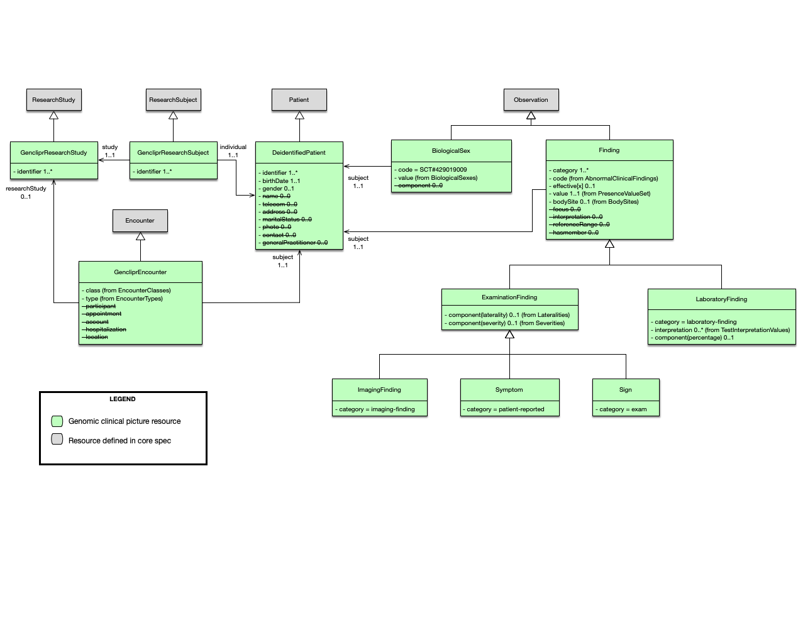

Genomics Clinical Picture Repository Implementation Guide
0.1.0 - ci-build
Genomics Clinical Picture Repository Implementation Guide - Local Development build (v0.1.0). See the Directory of published versions
| Official URL: http://aehrc.github.io/genclipr-fhir-ig/ImplementationGuide/agha.fhir.genclipr | Version: 0.1.0 | |||
| Draft as of 2022-03-21 | Computable Name: GenomicsClinicalPictureRepositoryIG | |||
Copyright/Legal: Australian Genomics |
||||
This implementation guide describes a collection of FHIR resources that can be used to implement a repository that stores patient clinical pictures, including clinically relevant genomic data. Patient information can come from multiple sources, including electronic health record systems (EHRs), electronic data capture systems such as REDCap, and laboratory information management systems (LIMs). It is meant to be used in a research setting and therefore requires patient information to be de-identified. The FHIR profiles contain strict terminology bindings that ensure queries can be run consistently across multiple repositories. This implies, however, that data might require mapping and transformation, even when being imported from FHIR-enabled sources.
This implementation guide uses terminology, notations and design principles that are specific to FHIR. Before reading this implementation guide, its important to be familiar with some of the basic principles of FHIR as well as general guidance on how to read FHIR specifications. Readers who are unfamiliar with FHIR are encouraged to read (or at least skim) the following prior to reading the rest of this implementation guide.
This implementation guide builds on FHIR v4.0.1: R4.
The design decisions in this implementation guide are based on the guidance given in the base FHIR specification and the paper Toward an Ontological Treatment of Disease and Diagnosis.
A summary of the model is shown in the following diagram:

The following sections describe the different resources that were used.
When data is being imported from a research study, the GencliprResearchStudy profile should be used to indicate that these resources where produced as part of the study. The researchStudy extension can be used to indicate that an event is relevant to a research study. In this IG it is used to link GencliprEncounters to a GencliprResearchStudy.
All resources are required to be associated with a GencliprEncounter. If the data comes from a research study then the encounter should be linked to the corresponding research study resource. No direct links from the resources in the encounter to the research study are required.
The main challenge when dealing with de-identified data is matching data about the same patient from multiple sources. A typical approach is to use pseudonimisation, but this is out of scope of this implementation guide. A DeidentifiedPatient only requires an identifier. Every resource should be associated to a DeidentifiedPatient regardless of the data’s origin. When data originates in a research study, a GencliprResearchSubject is also required to establish the link to the corresponding GencliprResearchStudy. Both the patient and the research subject should have the same identifier.
The dateOfBirth attribute is mandatory. In certain scenarios, for example when dealing with rare diseases, a full date of birth might be identifying. The FHIR date data type also accepts years or years and months only. In cases where providing the full date of birth is problematic, the source systems should submit only a partial date of birth. This, however, is not validated by the IG.
The gender attribute in the Patient resource represents the patient’s administrative gender. The clinical picture repository requires the biological sex, and this should be represented as an Observation, according to the FHIR documentation. The implementation guide defines the BiologicalSex profile to represent this observation and this is the preferred mechanism to record the patient’s biological sex. If only the administrative gender is available, then the gender attribute can be used.
Finding is the parent class of all the observations whose value can be represented as a code from the presence value set. It extends the Observation resource and follows the third pattern discussed in the interoperability section. In this case, the code is reduced to a single term and the value indicates its presence or absence. The choice was made to support a coded value instead of a boolean value, so values such as not done could be supported. This is important because when running complex queries, for example, the calculation of scores that use multiple data points, it is important to distinguish if these data points are absent or were never collected.
Observations that do not follow this pattern have their own profile, such as biological sex.
A sign is defined as “a bodily feature of a patient that is observed in a physical examination and is deemed by the clinician to be of clinical significance”. Note that in this IG we distinguish a sign from a phenotype or phenotypic feature. A sign is an observation of a phenotype and therefore the repository is a collection of signs (and symptoms) rather than phenotypes (or phenotypic features). A symptom, on the other hand, is reported by the patient. Both signs and symptoms constrain the codes of the observation to be abnormal conditions, i.e., the code is bound to a value set that includes SNOMED CT disorders and HPO phenotypic abnormalities (plus additional codes that are not in either of these terminologies).
The ImagingStudy resource in FHIR represents the content produced in a DICOM imaging study. An ImagingFinding in this IG represents an observation based on an imaging study. For example, a brain MRI might shows signs of a stroke and this can be represented as an imaging finding of stroke-like picture.
A laboratory finding is defined as “a representation of a quality of a specimen that is the output of a laboratory test and that can support an inference to an assertion about some quality of the patient”. In this IG, laboratory findings are observations that interpret raw test results and follow the same basic pattern as signs and symptoms but contain different modifiers that are relevant in this context. They can be referenced by a DiagnosticReport, but this is not required.